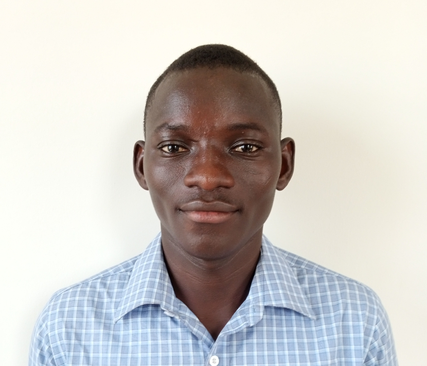

Akurugu Joseph Avoka
Ashesi University, 1 University Ave, PMBCT3 Cantonments, Accra
Email: akurugu.avoka@ashesi.edu.gh/akurugjose@gmail.com
Phone contact: 0542713928/0271776670
EDUCATION
Ashesi University:Berekusu, Eastern Region. Expected Date of Graduation: Oct. 2024 Bsc. Computer Science
Notre Dame Minor Seminary Senior High School-Navrongo, Upper East Period spent at NDMSSHS: September 2016-June 2019 Program offered: General Science
ACHIEVEMENTS/AWARDS
- Dean's list, Ashesi UniversityAugust 2021-December 2022
- Certified in Microsoft Office Suite, Sidehustle June 2021-August 2021
- Certified in Soft skills, Jobberman Centre June 2021-July 2021
- Scholars for Impact Programmes, Ashesi University September 2020-November2024
WORK EXPERIENCES
Intern at ELNAK Shredder Fabrication, Ashesi University February 2022-May 2022
- Volunteered and supported alumnus to design a shredder for fabric recycling by offering design thinking ideas
- Facilitated the procurement of raw materials through monthly procurement exercises
Teaching Assistant, Methodist & Roman Catholic May 2021-August 2021
- Volunteered and taught students in Mathematics, uplifting students' knowledge in the subject incredibly through regular pre-class exercises
Teacher, Self-employed & Part-time February 2019-March 2020
- Organized extra classes for students to assist their learning process
- Taught basic maths at Teogo School Complex, helping pupils to understand basic concepts in the subject area
House Organiser and Club President, Notre Dame SHSApril 2018-May 2019
- Mobilized colleague students to engage in effective house cleaning, which enabled my house to win the cleanest house award several times
- Revived St Augustine Bible Sharing Club into a formidable agency, increasing student membership from 30% to 80% through effective monitoring
PROJECTS AND RESEARCH
LifeSavers- Team member, FDE course at AshesiJanuary 2021-December 2021
- Collaborated with team members and designed a website on which drivers could learn the road signs in their languages
F4 Naturals-Team Member, Global Startup Labs (GSL) at WACCIJanuary 2021-December 2021
- Collaborated with three others to make medicinal products from plants
CO-CURRICULA ACTIVITIES
Math tutor, Ashesi University August 2021- current
- Assist colleagues in getting a further understanding of mathematical concepts through one-one tutoring
Buddy-Coach, Ashesi University August 2021-April 2022
- Offered casual guidance to first-year students to adapt to campus life
Farming project-Participant, Ashesi University February 2022-May 2022
- Undergoing training in vertical farming and hydroponics to learn modern farming techniques
SKILLs
- Team spirit and sportsmanship
- Critical thinker and idea hamster
- Effective communication: both written and oral
- Python programming
- R-programming
- GeoGebra Applet
- MS Word, Excel & PowerPoint
REFERENCES
Available upon request